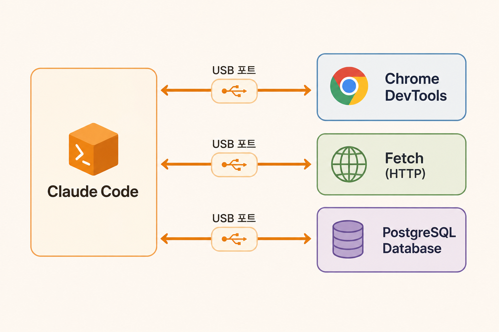

기초 커맨드를 활용하고, 커스텀 Skill을 작성하며, MCP로 외부 도구를 연결한다
| 커맨드 | 기능 | 언제 쓰나 |
|---|---|---|
/help | 전체 명령어 목록 | 뭐가 있는지 모를 때 |
/context | 현재 토큰 사용량 확인 | "지금 얼마나 썼지?" |
/clear | 컨텍스트 초기화 | 새로운 작업 시작할 때 |
/compact | 대화 요약 후 압축 | 컨텍스트 꽉 찼을 때 |
/init | CLAUDE.md 자동 생성 | 새 프로젝트 시작할 때 |
/permissions | 도구 허용/차단 관리 | 반복 승인 귀찮을 때 |
/btw | 메인 작업을 방해하지 않고 질문 | "이거 왜 이렇게 동작해?" |
가장 자주 쓰는 3개: /clear, /compact, /context
.claude/skills/ 디렉토리에 SKILL.md 파일로 정의| 호출 방식 | 예시 | 동작 |
|---|---|---|
| 수동 호출 | /review src/api/tasks/route.ts | 슬래시 커맨드로 직접 실행 |
| 자동 호출 | "이 파일 리뷰해줘" | description 매칭으로 자동 실행 |
매번 긴 프롬프트 대신 → /review src/app/api/tasks/route.ts 한 줄로
참고: Anthropic 공식 스킬 레포지토리 (pdf, frontend-design, claude-api, skill-creator 등 17개 공식 스킬)
SKILL.md = frontmatter + 자유 형식 본문
같은 Skill = 같은 형식의 결과 → 팀원 누구나 동일한 리뷰를 받음

두 가지 연결 방식:
--scope user + npx = 로컬 stdio 서버 (내 PC에서 실행)--transport http + URL = 리모트 HTTP 서버 (클라우드)공식 문서: Chrome DevTools MCP · Playwright MCP · Notion MCP
| 역할 | 추천 MCP | 용도 |
|---|---|---|
| 프론트엔드 | Playwright, Chrome DevTools | UI 테스트, 브라우저 디버깅 |
| 백엔드 | PostgreSQL | DB 조회, 스키마 확인 |
| PM | Linear, Notion, Jira | 이슈 관리, 문서 연동 |
| 디자이너 | Figma | 디자인 시스템 참조 |
| DevOps | Sentry, AWS | 에러 추적, 인프라 관리 |
MCP는 2-3개만 설치 -- 각 MCP가 컨텍스트를 소비합니다
| MCP | CLI | |
|---|---|---|
| 설치 | MCP 서버 설치 필요 | 이미 있는 CLI 도구 사용 |
| 컨텍스트 비용 | 도구 목록이 토큰 차지 | 없음 |
| 장점 | 구조화된 입출력, 안정적 | 가볍고 유연, 도구 무한 |
| 적합한 경우 | 반복적 외부 연동 | 일회성 호출, 간단한 작업 |
5분 step/03-commands-mcp 브랜치
1 파일 생성: .claude/skills/review/SKILL.md
2 실행: /review src/app/api/tasks/route.ts
3 기대 결과: Critical -- assigneeId 누락 발견
5분 step/03-commands-mcp 브랜치
1 MCP 설치
2 TaskFlow 실행 후 브라우저에서 localhost:3000 열기
3 Claude에게 검증 요청
4 기대 결과: 요청에 assigneeId 있음, 응답에 null
Skill → 코드를 읽고 문제를 찾음 (정적 분석)
DevTools → 실행 중인 앱을 관찰 (동적 검증)
| 개념 | 한 줄 요약 | 비유 |
|---|---|---|
| 기초 커맨드 | 7개면 충분 | 자주 쓰는 단축키 |
| Skill | 반복 작업을 /명령어로 | 매크로 |
| MCP | 외부 도구 연결 | USB 포트 |
다음 섹션 예고: Hooks = "매번 자동으로 실행되는 규칙" — CLAUDE.md는 무시 가능, Hooks는 100% 강제